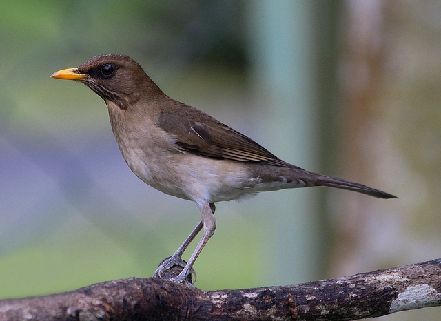
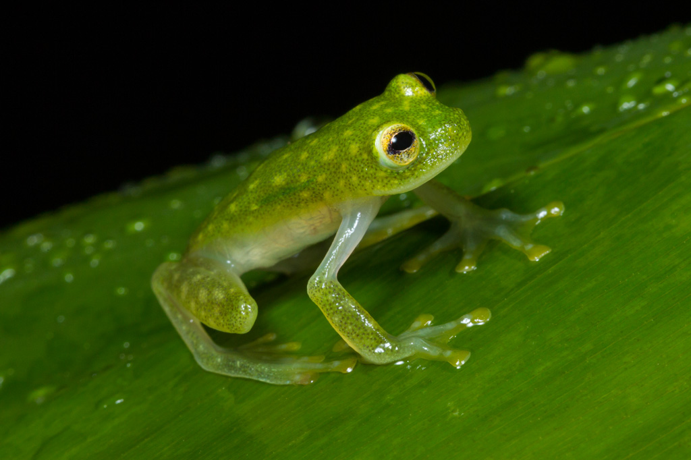

Sabiá
Turdus amaurochalinus
| Reino: | Animalia |
| Classe: | Aves |
O sabiá-laranjeira (Turdus rufiventris) é uma ave comum na
América do Sul e o mais conhecido de todos os sabiás, identificado pela cor de ferrugem do ventre e por seu
canto melodioso durante o período reprodutivo. É especialmente apreciado no Brasil; segundo Decreto de 3 de
outubro de 2002, as comemorações nacionais do Dia da Ave devem se concentrar no sabiá-laranjeira, "símbolo
representativo da fauna ornitológica brasileira e considerado popularmente Ave Nacional do Brasil". Já era
símbolo do estado de São Paulo desde 1966. É citado por diversos poetas como o pássaro que canta o amor e a
primavera e também esteve presente no emblema oficial da Copa das Confederações de 2013, realizada no
Brasil.
Este sabiá mede 23 cm de comprimento, tem o bico reto de cor amarelo-oliva, as patas
cinzas, o olho negro circundado finamente de amarelo e a penugem do dorso de um tom uniforme
marrom-acinzentado. A garganta é esbranquiçada rajada de marrom, o peito é cinza-pardo, que vai mudando para
um alaranjado opaco no ventre. Não há dimorfismo sexual significativo, mas as fêmeas tendem a ser maiores
que os machos e um pouco mais claras no ventre. A existência de colorações aberrantes, incluindo
albinismo, não é rara, mas é pouco citada na literatura. A causa disso não é bem esclarecida, mas pode estar
ligada a alterações no seu meio ambiente ou mutações genéticas.
Ocorre também o leucismo as vezes denominado erroneamente de albinismo. O leucismo é
a perda parcial ou total de melanina, segundo estudos tem uma frequência inferior a 1%. Ocorre
principalmente na plumagem, e no restante do corpo geralmente a pigmentação é normal. Não se sabe como é
transmitida geneticamente esta condição. Existem poucos casos de acompanhamento na natureza.
Sapo
Bufo bufo
| Reino: | Animalia |
| Classe: | Mammalia |
Sapo é uma designação genérica de anfíbios da ordem Anura
predominantemente terrestres, com pele rugosa, e glândulas parotoides semelhantes a verrugas. É usado
especialmente em relação a membros da família Bufonidae. No entanto, não sendo uma designação científica,
aplica-se também a algumas espécies de outras famílias como Bombinatoridae, Discoglossidae, Pelobatidae,
Rhinophrynidae, Scaphiopodidae e Microhylidae. Por exemplo, o sapo-parteiro pertence à família
Discoglossidae, à qual pertencem também as rãs-pintadas. A semelhança física dos sapos de famílias
diferentes deve-se a evolução convergente em ambientes secos.
Existem cerca de 4.800 espécies de sapos. A maioria deles vive próximo a uma fonte
de água , muito embora existam sapos que vivam em ambientes húmidos que são considerados ambientes
aquáticos, como a serapilheira de florestas tropicais húmidas. A necessidade de água é mais premente para os
ovos e os girinos do sapo, e algumas espécies utilizam poças temporárias e água acumulada nos ramos de
plantas, como as bromélias como sítio de criação.
Os sapos se distinguem das rãs pelas membranas interdigitais pouco desenvolvidas e
pela pele mais seca e rugosa. Geralmente, vivem em ambiente mais seco.
Os anfíbios dependem da água para a postura de ovos, pois estes não têm casca, e
para manter a pele húmida, necessário para a realização da respiração cutânea na qual a troca de gases é
feita pela pele. A respiração cutânea é necessária pois a respiração pulmonar não é completamente
eficiente.
Depois de alguns dias, dos ovos saem girinos que respiram por brânquias, têm uma
cauda e não têm pernas. Com o tempo o girino vai perdendo a cauda, desenvolvendo pernas posteriores e
anteriores e trocando a respiração branquial pelas respirações pulmonar e cutânea até deixar a água ao
término das transformações.
Os sapos se alimentam de insetos e capturam suas presas lançando para fora da boca a
língua musculosa, longa e pegajosa, que é presa ao assoalho da boca pela extremidade anterior.